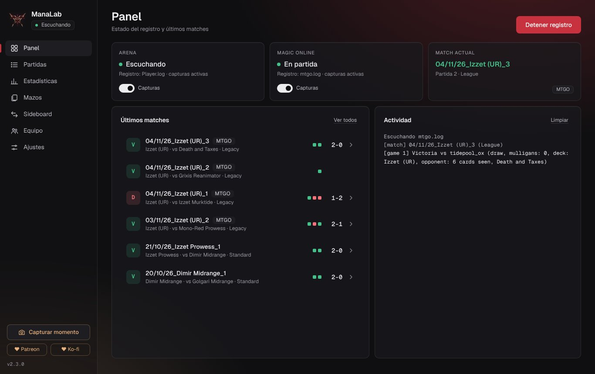
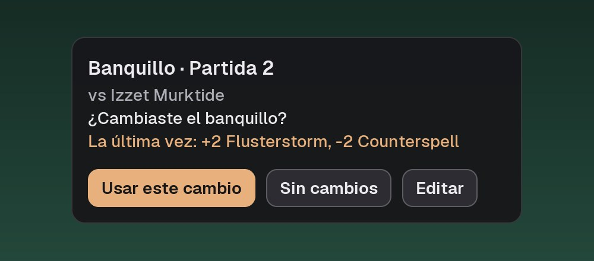
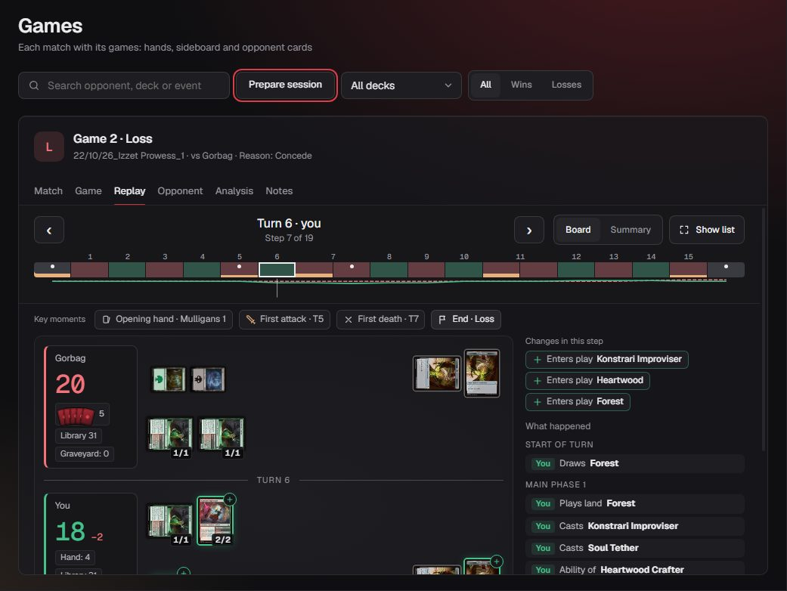
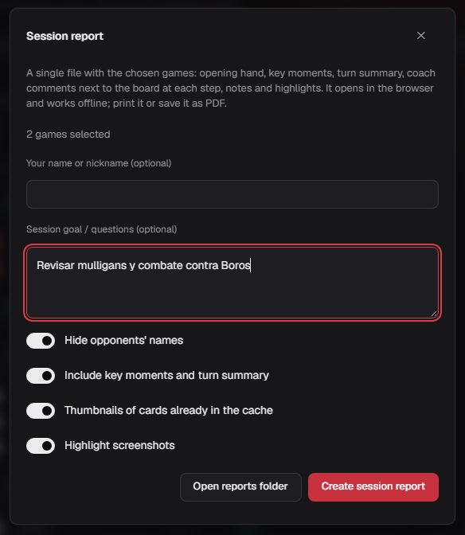
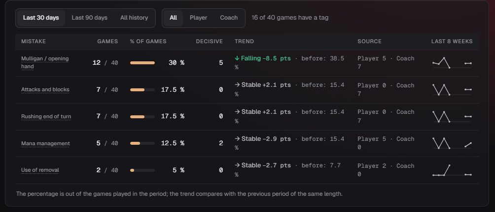
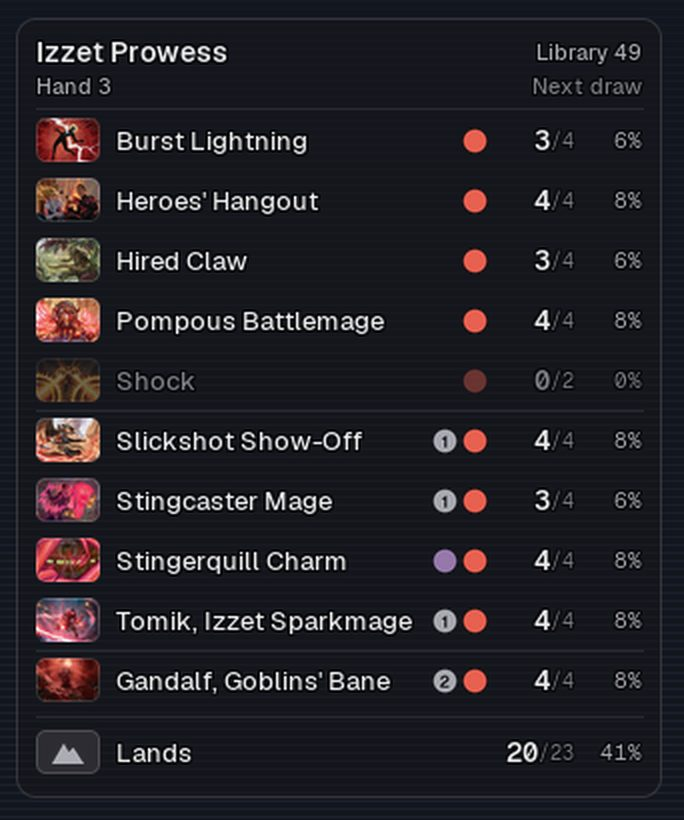
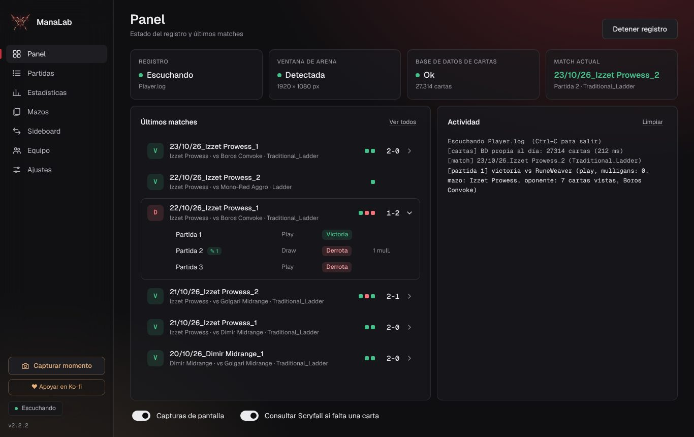

Cada partida de Arena y Magic Online, registrada sola.
ManaLab es un tracker que lee el registro de Arena y de Magic Online mientras juegas y guarda tus manos iniciales, mulligans, play/draw, cambios de banquillo y el mazo del rival. Luego te enseña dónde ganas y dónde pierdes.
Ahora para Arena y Magic Online
La versión 2.3 trae Magic Online a ManaLab, con manos, estadísticas, repeticiones y overlay, y añade algunas cosas para todos.
Magic Online, registrado solo
Las partidas de MTGO se guardan con sus manos, mulligans, play/draw y el mazo del rival, y el overlay también funciona ahí. Tu mazo se nombra por sus colores.
Lista de tierras en el overlay
Pasa el ratón por «Tierras» en el overlay y se abre la lista de las tierras de tu mazo con las copias que quedan y la probabilidad de robar cada una. Se desactiva en Ajustes › Overlay › Mi panel.
Reportar un bug
Un botón «Reportar un bug» dentro de la app te permite contarnos qué ha fallado, con las últimas líneas del registro si decides adjuntarlas.
Estadísticas con el formato real
Cada partida cuenta en su formato real y puedes filtrar las estadísticas por formato.
Interfaz rediseñada
Toda la app estrena aspecto.
Manual de usuario en inglés
Un manual en PDF que llega con cada versión.

Arena y Magic Online, lado a lado
El Panel muestra el estado de cada juego y tus últimos matches, con una pequeña etiqueta MTGO en los que jugaste en Magic Online.

Confirma tu banquillo con un clic
Magic Online no envía a tiempo tu lista con el banquillo, así que entre partidas un panel pequeño te pregunta si la cambiaste: usa el cambio de la última vez, indica que no hubo cambios o abre el editor.
Magic Online en ManaLab: qué es igual y qué cambia
- No hay que configurar nada. ManaLab empieza a registrar solo cuando abres Magic Online. También puedes importar un archivo
mtgo.logpara traer partidas que jugaste con ManaLab cerrado. - Tus herramientas principales, en Magic Online. Manos, mulligans, play/draw, mazo del rival, estadísticas, repetición y overlay.
Estudia tus partidas y trabaja con tu coach
La versión 2.2 iba de revisar: repeticiones, informes y tendencias.

Cada partida, repetida con las cartas reales
Un tablero con las imágenes reales de las cartas, momentos clave y los comentarios de tu coach en cada paso. En Magic Online, las fases y las cartas giradas se deducen y llevan la marca ≈.

Un informe de sesión para tu coach
Pulsa «Preparar sesión» y elige las partidas: obtienes un solo archivo con manos, momentos clave y notas, para revisar o enviar a tu coach.

Etiquetas del coach y tendencias
Tu coach etiqueta los errores por partida o por paso, y «Lo que más se repite» te enseña cómo evoluciona cada uno en 30 o 90 días, o en todo tu historial.

Un overlay rediseñado
Estilo nuevo, nombres de las cartas en tu idioma y la probabilidad de robar cada carta en tus próximos 1, 2 o 3 robos.
Capturas con datos de ejemplo de Arena (interfaz en inglés).
Descubre qué salió mal en cada derrota
La app es gratis. Solo el análisis con IA es de pago.
Abre cualquier derrota y pregunta a la IA qué salió mal, dónde podías haber jugado mejor y qué probar la próxima vez. Lee los datos de la partida, no tu nombre ni el del rival.
¿Quieres probarlo antes? Pide una prueba gratis por correo.
Hasta 30 análisis al día. Suscríbete con 5 € al mes en Ko-fi o con un nivel de 5 $ o más en Patreon (Researcher o Lab Partner). En los dos casos recibes tu código por correo en cuanto te suscribes.
Cancelas cuando quieras: si no renuevas en Ko-fi, o si dejas de pagar o bajas de nivel en Patreon, el código caduca solo.
De los registros de Arena y Magic Online a tu historial
Con el «Registro detallado» activado, Arena escribe cada partida en el Player.log. Magic Online escribe su propio registro, mtgo.log, sin que tengas que activar nada. ManaLab los lee mientras juegas y los convierte en matches que puedes revisar.
[UnityCrossThreadLogger] GreToClientEvent
{ "type": "GREMessageType_MulliganReq",
"systemSeatIds": [1] }
[UnityCrossThreadLogger] GreToClientEvent
{ "gameInfo": {
"matchState": "MatchState_GameComplete",
"gameNumber": 3,
"results": [{ "result": "ResultType_WinLoss",
"winningTeamId": 1 }] } }Todo lo que apuntarías después de cada match, ya apuntado
Matches y partidas
Cada Bo3 es una fila con su marcador (2-1, 1-2…) que se despliega en sus partidas: play o draw, resultado y mulligans.
Manos y capturas
Tu mano inicial, la que te quedaste y capturas de los momentos clave. Pulsa F8 o el botón sobre el juego para guardar el momento que quieras y añadirle una nota. Las capturas se guardan en tu PC y se pueden desactivar en Ajustes.
Mazo del rival
Compara las cartas del rival con los mazos más jugados del formato de la partida y le pone el que más coincide. Las listas del meta se actualizan cada 3 días.
Estadísticas
Winrate de matches y de partidas, rachas, últimos días y desgloses por mulligans, play/draw, mazo y arquetipo rival.
Tus mazos
Cada lista que juegas con su winrate. Las variantes de banquillo se agrupan bajo el mismo mazo y puedes renombrarlas. En Magic Online, los mazos se nombran por sus colores.
Análisis de derrotas con IA (suscriptores)
Los suscriptores reciben un análisis con IA de cada derrota: qué salió mal, dónde podías haber jugado mejor y qué probar la próxima vez. Suscripción: 5 € al mes en Ko-fi, o un nivel de 5 $ o más en Patreon (Researcher o Lab Partner).
Overlay mientras juegas
Una ventana aparte junto al juego, en Arena o en Magic Online, con las cartas que te quedan por robar, las que has visto del rival y el turno. Solo muestra información pública o deducible de lo jugado. En Magic Online puede mostrar menos si el registro no trae el estado de la mesa.
Guía de sideboard
Por matchup, qué metiste y qué sacaste en tus propias partidas y cómo te fue, para dejar de ir de memoria en el sideboard.
Coach y equipo
Etiquetas de error y notas en cada partida, tablas de matchups e informe para tu coach. El modo equipo comparte partidas, capturas y notas a través de una carpeta común, y tu coach ve cada partida completa, con su repetición.
Pensada para revisar, no para rellenar

Capturas con datos de ejemplo.
Cuatro pasos, una sola vez
Descarga y abre
Windows 10 u 11. Descomprime el ZIP y abre ManaLab.exe. No hace falta instalar nada.
Versión 2.3.0 · ZIP · otras versiones
Antes de descomprimir, botón derecho en el ZIP › Propiedades › marca Desbloquear › Aceptar: así Windows no muestra «Windows protegió su PC» ni bloquea los archivos del programa. Si aun así sale el aviso, pulsa Más información › Ejecutar de todas formas. Solo hace falta en esta primera descarga: las versiones siguientes se instalan desde la propia app sin ningún aviso.
¿Tienes la 2.1.0, 2.1.1 o 2.1.2? Actualiza a mano por última vez: desbloquea el ZIP como se explica arriba y descomprímelo encima de tu carpeta de ManaLab (tus partidas y ajustes se conservan). Esas versiones podían abrirse y cerrarse sin mostrar la ventana; desde la 2.2 las siguientes se instalan solas desde la app.
Prepara tu juego
Arena: activa Opciones › Cuenta › Registro detallado. Sin esto, Arena no escribe las partidas.
Magic Online: no hay que configurar nada. Abre Magic Online y ManaLab lo detecta solo. La ruta del registro está en Ajustes › Juegos, en Predeterminado.
Pulsa «Iniciar registro»
Abre ManaLab antes de jugar y déjalo en marcha. Cada match aparece en el Panel al terminar.
Juega y revisa
Juega con Arena o Magic Online en ventana o sin bordes y revisa tus partidas en Partidas. La app es gratis. Si quieres el análisis de tus derrotas con IA, suscríbete en Ko-fi (5 € al mes) o en Patreon (nivel de 5 $ o más) y pega el código en Ajustes › Equipo e IA.
Antes de empezar
¿Toca el juego o me da ventaja en la partida?
No, ni en Arena ni en Magic Online. Solo lee los archivos que los juegos escriben en tu PC (el Player.log de Arena; el mtgo.log, los Match_GameLog_*.dat, mtgo_game_history y los archivos de mazo grouping *.xml de Magic Online), sin modificarlos. No modifica Arena ni Magic Online, no lee su memoria y no se conecta a sus servidores. El overlay opcional es una ventana aparte que solo muestra información pública o deducible de lo jugado, nunca información oculta.
¿Qué datos envía?
Tus partidas, capturas y estadísticas se quedan en una carpeta de tu PC. El programa solo descarga las listas actualizadas de mazos del meta, una por formato (cada 3 días), consulta nombres de cartas en Scryfall (también con ids de Magic Online) cuando los necesita, y pregunta a GitHub una vez al día si hay una versión nueva. Las tres cosas se pueden desactivar en Ajustes. Solo envía datos cuando pides algo. El análisis con IA envía los datos de esa partida (resultado, mazo, manos, cartas vistas y cronología), nunca tu nombre ni el del rival. Un reporte de bug envía lo que escribes, tu correo si lo pones, la versión de ManaLab, tu sistema e idioma, si usas Arena o Magic Online, un identificador anónimo de tu equipo y, si lo marcas, las últimas líneas de registro.log sin tu nombre de usuario ni códigos. No envía partidas ni mazos.
Más detalles: ¿Es seguro ManaLab?
Windows dice «Windows protegió su PC». ¿Es seguro?
Ese aviso sale con los programas que no tienen un certificado de firma de pago, algo habitual en herramientas gratuitas pequeñas. Pulsa «Más información» y luego «Ejecutar de todas formas». Solo sale en la primera descarga: las versiones nuevas se instalan con «Actualizar ahora» desde la propia app, sin aviso. Para evitarlo también la primera vez, antes de descomprimir haz botón derecho en el ZIP › Propiedades › marca «Desbloquear» › Aceptar. Cada versión se comprueba en VirusTotal antes de publicarla.
Más detalles: ¿Es seguro ManaLab?
¿Funciona con Magic Online?
Sí, desde la 2.3. ManaLab registra tus partidas de Magic Online (MTGO): manos, mulligans, play/draw, mazo del rival, estadísticas, repetición y overlay. No hay que configurar nada: empieza solo cuando abres Magic Online, y puedes importar un archivo mtgo.log. Lo que cambia: Magic Online no envía las fases ni las cartas giradas, así que ManaLab las deduce del registro, y en la repetición lo deducido lleva la marca ≈ porque puede no ser exacto. Magic Online tampoco da a tiempo tu lista tras el banquillo: ManaLab te pide confirmar tus cambios entre partidas con un clic y, hasta entonces, el overlay marca la lista como sin confirmar. El overlay puede mostrar menos que en Arena si el registro no trae el estado de la mesa. Tu mazo se nombra por sus colores.
Más detalles: ManaLab para Magic Online
¿Funciona en Mac o en Limitado?
De momento es para Windows. Registra cualquier partida de Arena o de Magic Online, también de Limitado. El mazo del rival se compara con los mazos del meta del formato de la partida (Standard, Pioneer, Modern, Legacy, Vintage y Pauper); si nada coincide con claridad, como en Limitado, se nombra por sus colores.
¿Funciona en Linux?
No hay versión nativa para Linux y no se ha probado con Wine ni Proton, así que no podemos prometer que funcione.
¿Es gratis?
El programa es gratis y no necesita cuenta. Lo único de pago es el análisis de derrotas con IA: 5 € al mes, que pagan el servicio de IA que usa. Todas las demás funciones son gratis.
¿Cómo consigo el análisis con IA?
Suscríbete en Ko-fi (5 € al mes) o elige un nivel de 5 $ o más en Patreon (Researcher o Lab Partner). En ambos casos, tras el pago recibes un código de suscripción por correo. Pégalo en Ajustes › Equipo e IA y el análisis aparece en la pestaña Análisis de cada derrota. ¿Quieres probarlo antes? Pide una prueba gratis por correo.
Gratis, con análisis de IA por suscripción
ManaLab se hace en ratos libres. El programa sigue siendo gratis. La suscripción (5 € al mes en Ko-fi, o un nivel de 5 $ o más en Patreon) paga el servicio de IA; los donativos en Ko-fi o Patreon ayudan al resto del proyecto.
¿Quieres probarlo antes? Pide una prueba gratis por correo.
Escríbenos
Dudas, errores o problemas con la suscripción. Respondemos por correo, normalmente en unos días.